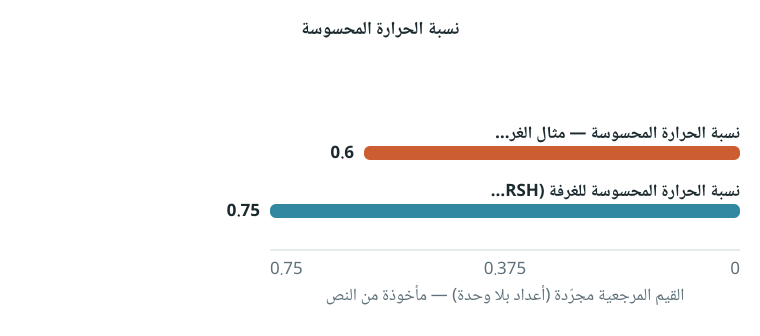

نسبة الحرارة المحسوسة
Sensible Heat Ratio (SHR) and Room Sensible Heat Factor
نسبة الحمل المحسوس إلى الحمل الكلي؛ تحدد ميل خط عملية التكييف ومقدار التكثيف المطلوب.
نسبة الحرارة المحسوسة هي الحمل المحسوس مقسومًا على الحمل الكلي: SHR = q_s/(q_s + q_l) = q_s/q_t، حيث q_s الحمل الذي يغيّر درجة الحرارة وحدها وq_l الحمل الكامن الذي يغيّر المحتوى الرطوبي. وتُكتب أيضًا بدلالة الأنثالبي: SHR = c_p(t_o − t_i)/(h_o − h_i)، بسعة حرارية للهواء الجاف c_p = 1.005 kJ/kg·°C، وt_o وh_o حالة الهواء الخارج من الملف وt_i وh_i حالته الداخلة إليه. والنسبة تحدد اتجاه خط العملية على خريطة السيكرومتري: SHR = 1 عملية محسوسة خالصة بلا تكثيف، وSHR منخفض يعني حملًا كامنًا كبيرًا وتكثيفًا أكثر وماءً مصروفًا أكثر. وفي حساب الغرفة يُستخدم المقابل الأمريكي بالحمل المحسوس للغرفة إلى الحمل الكلي: RSHF = Q_sr/Q_tr = c_p(t_r − t_i)/(h_r − h_i)، حيث t_r وh_r حالة الهواء في الغرفة. وR هو النسبة عند الغرفة، أي عند نقطة الإرجاع، لا عند الملف؛ ولذلك يفترق SHR الملف عن RSHF الغرفة بمقدار حمل الهواء الخارجي، وهو ما يُفسّر لماذا يُصمَّم الملف على نسبة أشدّ من نسبة الغرفة. والنسبة ليست كفاءة: هي نسبة تدفّق حراري، وقيمتها المنخفضة تعني عملًا كامنًا أكبر لا أداءً أفضل.
كيف تعمل الظاهرة؟
حين يمرّ الهواء على ملف بارد تحت نقطة نداه تتفرّع الطاقة المنزوعة إلى جزء محسوس يخفض درجة الحرارة وجزء كامن يكبّف البخار. ونسبة الجزأين تحدد موقع الحالة النهائية على الخط المستقيم بين الحالة الداخلة ونقطة الندى الإشباعية للجهاز. فكلما قلّ الحمل الكامن في الغرفة مال خط العملية ناحية الأفق (SHR مرتفع)، وكلما كثر الشاغلون والتسريب والطبخ والبخار مال ناحية الانحدار (SHR منخفض) وازداد الماء المكثَّف.
العلاقة بالأرقام
الحدّان: SHR = 1 عملية محسوسة خالصة، وSHR = 0 عملية كامنة خالصة. وللتقدير السريع: SHR = 1.005·Δt/Δh بوحدات kJ/kg. وجدول القيم التصميمية يضع المساكن 0.80–0.95، والقاعات 0.65–0.75، والمطابخ 0.60–0.70، والبنوك 0.75–0.90، والسوبرماركت 0.65–0.85. والفرق بين SHR الملف وRSHF الغرفة هو حمل الهواء الخارجي: الهواء الخارجي يضيف حملًا كامنًا فتنخفض نسبة الملف عن نسبة الغرفة.
مفاهيم متقاربة
SHR نسبة أحمال، وRSHF نسبة أحمال عند الغرفة، وعامل التجاوز نسبة هواء يمرّ بلا تلامس فعّال مع الملف. الأولى والثانية تُقاسان من ظروف الهواء، والثالثة من هندسة الملف، ولا تُستبدل إحداهما بالأخرى في الحساب.
حدود التطبيق
الأول: النسبة تفقد معناها حين تلامس الحالة خط التشبّع، فتتغيّر العملية إلى تبريد مع تكثيف لا يوصفه خط مستقيم. الثاني: قيم الجداول نطاقات تصميمية لنوع الإشغال لا أرقام حالة بعينها. الثالث: النسبة لا تعبّر عن كفاءة الطاقة؛ فمقارنة وحدتين بنسبتين مختلفتين بلا حساب القدرة والتدفّق مضلّلة. الرابع: في المناخات الحارّة الرطبة يكون الحمل الكامن للتسريب كبيرًا، فتُحسب النسبة من قياس لا من جدول.

| الكمية | القيمة | المصدر |
|---|---|---|
| نسبة الحرارة المحسوسة — مثال الغرفة 20 °C/50% إلى 26 °C/40% | 0.6 — | [1] |
| نسبة الحرارة المحسوسة للغرفة (RSHF) — مثال 4 kW محسوس و1.4 kW كامن | 0.75 — | [2] |
| السعة الحرارية النوعية للهواء الجاف | 1.005 kJ/kg·°C | [1] |
| السعة الحرارية النوعية للهواء الجاف في الوحدات البريطانية | 0.240 Btu/lb·°F | [1] |
المصادر
- 1 Sensible Heat Ratio — The Engineering ToolBox. www.engineeringtoolbox.com/sensible-heat-ratio-d_700.html · اطُّلع عليه 2026-11-28
- 2 RSHF — Room Sensible Heat Factor — The Engineering ToolBox. www.engineeringtoolbox.com/rshf-room-sensible-heat-factor-d_701.html · اطُّلع عليه 2026-11-28
استشهد بهذا المصطلح
الصيغتان مبنيتان من بيانات الصفحة نفسها: العنوان والتاريخ ورابط النسخة المنشورة.
نسبة الحرارة المحسوسة — Sensible Heat Ratio (SHR) and Room Sensible Heat Factor. (2026). ديوان المعرفة — انفراد. https://infiradev.com/diwan/terms/term-sensible-heat-ratio.html
@misc{term-sensible-heat-ratio2026,
title = {نسبة الحرارة المحسوسة},
titleaddon = {Sensible Heat Ratio (SHR) and Room Sensible Heat Factor},
howpublished = {{ديوان المعرفة — انفراد} — مرجع علمي عربي},
year = {2026},
url = {https://infiradev.com/diwan/terms/term-sensible-heat-ratio.html},
urldate = {2026-11-28},
note = {مراجعة علمية: Abdullah Al-Huwaidi}
}
راجعه: Abdullah Al-Huwaidi · 2026-11-28 · آخر تحديث 2026-11-28